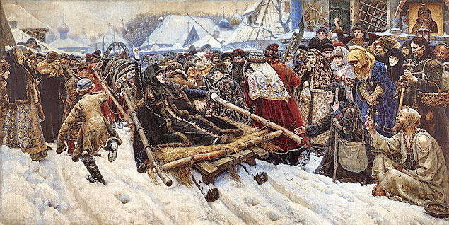
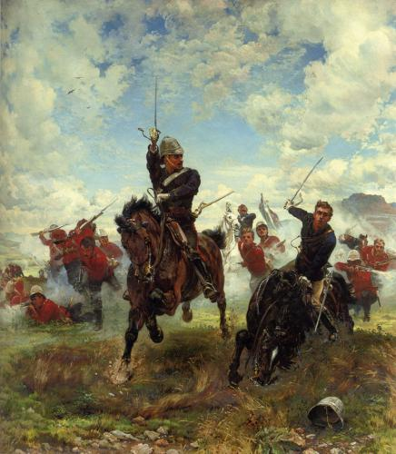

Анималистичесский жанр
Главная
3D объекты
Словарь
Жанры
| Жанры живописи: | Анималистика (Анималистический жанр), иногда также Анимализм (от лат. animal — животное) — жанр изобразительного искусства[1], основным объектом которого являются животные, главным образом в живописи, фотографии, скульптуре, графике и реже в декоративном искусстве. Анималистика сочетает в себе естественнонаучные и художественные начала. Главной задачей анималиста могут быть как точность изображения животного, так и художественно-образные характеристики, включая декоративную выразительность или наделение животных присущими людям чертами, поступками и переживаниями (например, изображение антропоморфных персонажей сказок и басен).
Из скульптуры имеет распространение анималистическая керамика.
Стилизованные фигуры животных имеются среди памятников звериного стиля, в искусстве Древнего Востока, Африки, Океании, древней Америки, в народном творчестве многих стран[2][3].
Художники, работающие в анималистическом жанре, называются анималистами[3].
| Жанры живописи: |
|---|---|---|
 Пейзаж Пейзаж |  Бытовой Бытовой |
|
 Анималистический Анималистический |  Портрет Портрет |
|
 Мифологический Мифологический |  Натюрморт Натюрморт |
|
|  Исторический |  Батальный |